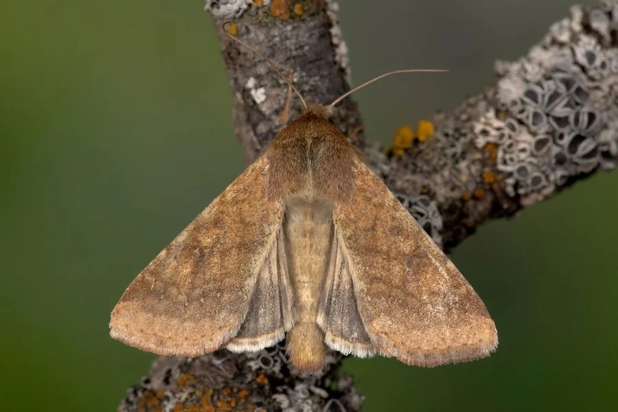

昆虫 · 动物界
棉铃虫 Helicoverpa armigera

世界性农业害虫，幼虫钻蛀棉花蕾铃和番茄果实，食性广、繁殖快，曾对棉花生产造成巨大损失，是棉花上最著名的害虫之一。
- 分类
- 门节肢动物门纲昆虫纲目鳞翅目科夜蛾科属棉铃虫属
- 栖息环境
- 棉田、番茄地、玉米地、豆田和其他农作物田
- 地理分布
- 全球分布，中国各地农区普遍发生
- 保护级别
- IUCN 暂无评估；中国未列入国家重点保护名录
物种志
棉铃虫成虫翅展 3.5–4.5 厘米，体色呈黄褐、灰褐或红褐色，前翅有环状和肾状斑纹及深色横带，后翅呈灰白或淡黄色，外缘有深色带；雌蛾触角丝状，雄蛾触角羽状。幼虫体色变化大，从绿色、黄色到红褐色都有，体表有纵线和疣突。
它呈世界性分布，在中国各地均有发生，寄主植物超过 200 种，包括棉花、番茄、玉米、大豆、辣椒等。幼虫孵化后先取食嫩叶，随后钻入棉花蕾铃、番茄果实和玉米穗内取食，造成落蕾、烂铃和果实腐烂。它一年发生 3–4 代，雌蛾可产卵 500–3000 枚，幼虫有转移危害的习性。20 世纪 90 年代，棉铃虫在中国棉区大发生，造成严重减产，后来推广转 Bt 基因抗虫棉才得到有效控制；它已对多种农药产生抗性，防治上强调综合管理。
形态与习性
- 食性幼虫取食棉花蕾铃、番茄果实、玉米穗等
- 翅展3.5–4.5 cm
- 寿命成虫约 1–2 周，一年 3–4 代
- 繁殖卵生，雌蛾产卵 500–3000 枚
- 活动节律蛾类夜间活动，幼虫昼夜取食
- 危害幼虫钻蛀蕾铃和果实，造成落蕾烂铃
趣味知识
- 棉铃虫幼虫会钻入棉花蕾铃和番茄果实内部取食，外表难以察觉。
- 20 世纪 90 年代棉铃虫在中国棉区大发生，促使抗虫棉大面积推广。
- 棉铃虫食性广、繁殖快，已对多种化学农药产生抗药性。